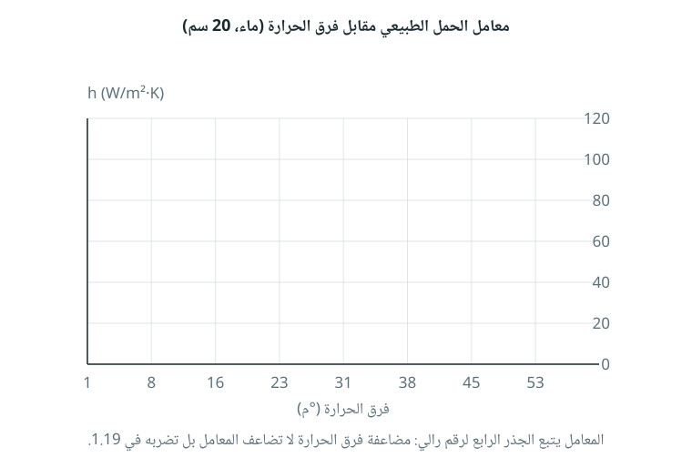

الماء الملوّن في الكأس: كيف يتحرك الحمل الحراري؟
حرّك فرق الحرارة واختر المائع. محاكاة تعليمية لا قياس فيزيائي حقيقي.
محاكاة تعليمية لا قياس فيزيائي حقيقي: الأرقام تُحسب من النموذج لحظيًا، ولا تُقاس بأدوات منزلية.
افتراضات النموذج والمصدر
Nu = 0.59·Ra^(1/4) ، h = Nu·k/L
صفائح رأسية
حمل صفيحي
خواص ثابتة عند 32.5 °م
Natural convection — governing relations — Wikipedia
Convective heat transfer coefficients — The Engineering ToolBox
املأ كأسًا زجاجيًا شفافًا بماء بارد واتركه ساكنًا، ثم أضف بقطارة قطرات ماء ساخن ملوّن عند القاع. سترسم القطرات خيطًا صاعدًا يتبدد عند السطح. اعد التجربة بوضع الملوّن الساخن عند السطح — فلا يصعد شيء.
السبب: الماء الساخن أقل كثافة، فتدفعه قوة الطفو إلى الأعلى حاملًا حرارته معه. هذه هي الحركة التي تُسمّى الحمل الطبيعي، وهي التي توزّع الحرارة في الغرف والقدور ومياه البحار بلا مضخة.
الشدة تُقاس بمعامل انتقال الحرارة h، ويعتمد على فرق الحرارة والارتفاع وخواص المائع. هنا النموذج يستخدم علاقة الصفائح الرأسية Nu = 0.59·Ra^(1/4) — والارتفاع يدخل مكعّبًا داخل رقم رالي، لذلك وعاء أعلى بحرّية يحرّك الحمل أقوى.
ما لا يُقاس منزليًا: معامل انتقال الحرارة نفسه؛ يحتاج قياس تدفق حراري وفرق حرارة دقيقين — والملوّن يُظهر المسار لا الرقم.
كيف تعمل الظاهرة؟
تسخين المائع يقلّل كثافته، فيرتفع أمام المائع الأبرد ويتحلّل مكانه، وتنشأ حلقة تدفق مغلقة. استمرارها مشروط بألا يتبدد فرق الحرارة أسرع مما يعيده التدفق.
العلاقة بالأرقام
Ra = g·β·ΔT·L³/(ν·α). عند ΔT=25 °م و L=0.2 م يكون Ra=2.92e+10، و Nu=0.59·Ra^0.25، فينتج h=729 W/(m²·K) للماء مقابل 4.80 للهواء بالهندسة نفسها.
مفاهيم متقاربة
يُخلط بين «الحمل الحراري» و«التبادل الإشعاعي» كسببيّ راحة الغرفة: الحمل هو الذي ينقل الحرارة في الهواء فعليًا، والإشعاع يصل مباشرة إلى الجلد بلا وسط.
حدود التطبيق
العلاقة صالحة لمدى محدد من رالي للصفائح الرأسية؛ خارج المدى تتغير الأسس (0.1 عند الحمل الصفيحي، و1/3 عند الاضطراب). لا تصلح لسطح أفقي كبير ولا لمساحات مغلقة ضيقة.

| الكمية | القيمة | المصدر |
|---|---|---|
| معامل الحمل عند ΔT=25 للماء | 729 W/(m²·K) | [1] |
| الرقم نفسه للهواء | 4.80 W/(m²·K) | [1] |
| U في الغرف (مرجع) | 5–10 W/(m²·K) | [2] |
المصادر
- 1 Natural convection — governing relations — Wikipedia. en.wikipedia.org/wiki/Natural_convection · اطُّلع عليه 2026-11-19
- 2 Convective heat transfer coefficients — The Engineering ToolBox. www.engineeringtoolbox.com/convective-heat-transfer-d_430.html · اطُّلع عليه 2026-11-19
راجعه: عبدالله الهويدي — مراجعة في تطبيق انفراد · 2026-11-19 · آخر تحديث 2026-11-19
رجوع إلى المعمل